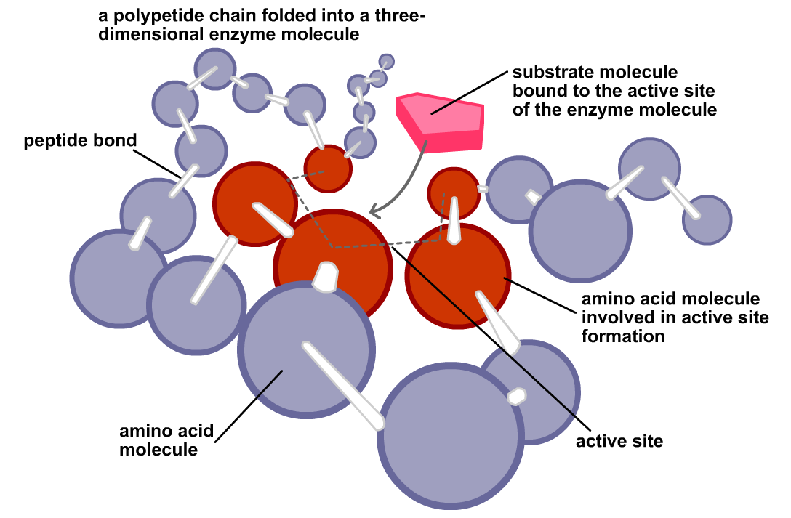
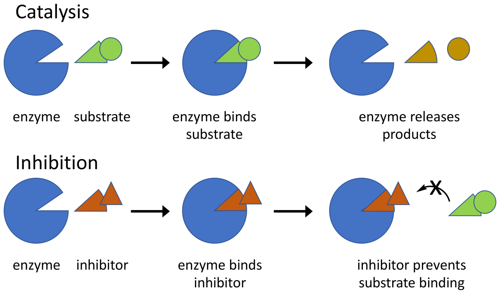
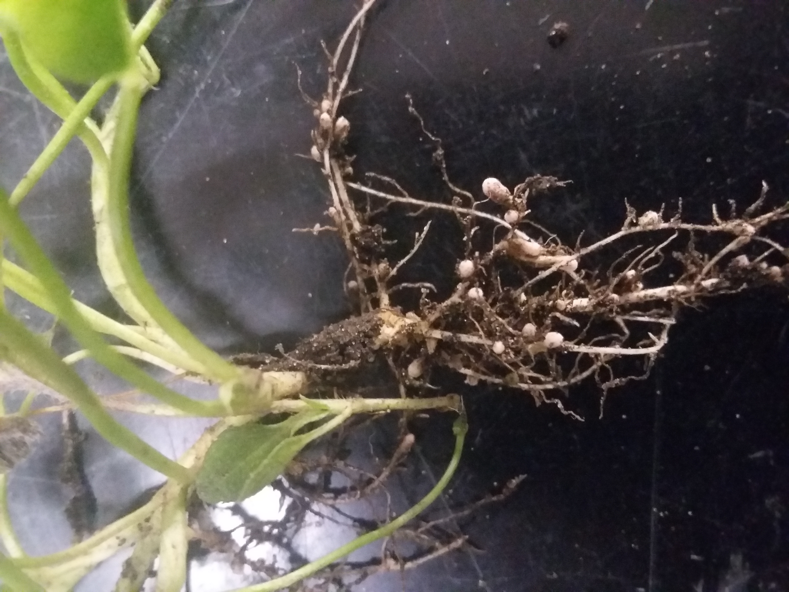

Unit 4: Enzymes and Nitrogen Metabolism
BOT-DSM-511 12 hours Plant Physiology and Metabolism (Theory)
A note before you start. This whole unit was missing from the student's class notes, so this page teaches it from scratch. You do not need any prior notes to follow it: every term is defined where it first appears, and the two halves of the unit — enzymes first, then nitrogen metabolism — are built up step by step.
How to use this page: read the definition box at the top of each topic, then the explanation, then the diagram or flowchart. Use the exam-traps box before a test, and the short notes and long answers at the end for writing practice.
1. Enzymes: structure and properties
Definition. An enzyme is a biological catalyst: a substance produced by a living cell that speeds up a chemical reaction without itself being used up in the reaction. Most enzymes are proteins; a few RNA molecules with catalytic activity, called ribozymes, are the exception.
Enzymes make life possible at ordinary body temperatures. Without them, most reactions in a cell would be far too slow to sustain life. An enzyme does not change whether a reaction can happen, nor the final equilibrium — it only makes the reaction reach that point much faster, by lowering the activation energy (explained in the next topic).
Protein nature — and the ribozyme exception
An enzyme is normally a globular protein folded into a precise three-dimensional shape. That shape matters: if the protein is denatured by heat or extreme pH, it unfolds, loses its shape, and usually loses its activity. The classic exception proves the rule is "mainly proteins, not only proteins": ribozymes are RNA molecules that catalyse reactions, for example the RNA in the ribosome that forms peptide bonds during protein synthesis. So the safe exam statement is: all enzymes are biocatalysts, most are proteins, and a few are catalytic RNA. Do not write "all enzymes are proteins" without the exception.
The active site and specificity
Only a small region of the enzyme molecule actually does the chemistry. This is the active site: a pocket or groove formed by a few amino acids brought together by folding. The substrate — the molecule the enzyme acts on — binds there, reacts, and leaves as product, while the enzyme is unchanged and ready for another substrate molecule.
Because the active site has a particular shape and chemical character, an enzyme is specific: it usually acts on one substrate, or on a small group of closely related substrates, and catalyses one type of reaction. This is why a cell can run thousands of different reactions side by side without chaos — each enzyme recognises its own substrate.

Apoenzyme, holoenzyme, cofactors, coenzymes and prosthetic groups
Many enzymes need a non-protein helper to work. Keep these terms apart, because examiners test them directly:
- Apoenzyme: the protein part alone, inactive by itself.
- Cofactor: a non-protein helper needed for activity. It may be a metal ion (for example Zn2+, Mg2+, Fe2+) or an organic molecule.
- Coenzyme: an organic cofactor that binds loosely and temporarily to the apoenzyme, and can move from one enzyme to another carrying a chemical group or electrons. Examples include NAD+, NADP+, FAD and coenzyme A. Many coenzymes are derived from vitamins.
- Prosthetic group: an organic cofactor bound tightly, even permanently, to the apoenzyme — for example the haem group in catalase and peroxidase.
- Holoenzyme: the complete, active enzyme: apoenzyme plus its cofactor (or coenzyme / prosthetic group).
In short: apoenzyme + cofactor = holoenzyme. The apoenzyme decides which substrate is recognised; the cofactor often does, or assists, the actual chemistry.
General properties of enzymes
- Catalytic and reusable: a small amount of enzyme converts a large amount of substrate, because the enzyme is regenerated after each reaction.
- Specific: each enzyme acts on a particular substrate and reaction, as above.
- Fast and efficient: enzymes can speed up reactions by many orders of magnitude.
- Work under mild conditions: near-neutral pH, moderate temperature and normal pressure — unlike many laboratory catalysts that need heat or strong acids.
- Sensitive to temperature and pH: activity rises with temperature up to an optimum, then falls as the protein denatures; each enzyme has an optimum pH at which it works best.
- Can be regulated: by inhibitors, activators, and by feedback from the products of the pathway (see the inhibition topic).
Nomenclature and classes — briefly
Enzyme names traditionally end in -ase added to the substrate or the reaction: lactase acts on lactose, protease acts on proteins, lipase on lipids. Modern classification groups enzymes into six classes by the type of reaction catalysed:
| Class | Reaction catalysed | Example |
|---|---|---|
| 1. Oxidoreductases | Oxidation and reduction (transfer of electrons or hydrogen) | Dehydrogenases, oxidases |
| 2. Transferases | Transfer of a chemical group from one molecule to another | Kinases (transfer phosphate) |
| 3. Hydrolases | Hydrolysis — breaking a bond by adding water | Amylase, lipase, proteases |
| 4. Lyases | Breaking a bond without hydrolysis or oxidation, often forming a double bond | Decarboxylases |
| 5. Isomerases | Rearranging atoms within a molecule to form an isomer | Phosphohexose isomerase |
| 6. Ligases | Joining two molecules, using energy from ATP | DNA ligase |
You do not need every example by heart; be able to name the six classes, state the reaction type of each, and give one example.
2. Mechanism of enzyme catalysis
Definition. Enzyme catalysis is the speeding up of a reaction by an enzyme through formation of a temporary enzyme–substrate (ES) complex, which lowers the activation energy of the reaction and stabilises the transition state, so that product forms faster and the enzyme is released unchanged.
The steps, in order
In symbols: E + S → ES → EP → E + P. The enzyme appears on both sides of the overall equation: it is a catalyst, not a reactant.
Lock-and-key vs induced fit
Two models explain how substrate and active site fit together, and the difference between them is a favourite short question.
- Lock-and-key model (Fischer): the active site is a rigid, pre-shaped pocket, and the substrate fits it exactly, like a key in a lock. This explains specificity well, but it cannot explain why an enzyme changes shape on binding, or why some enzymes bind related substrates.
- Induced-fit model (Koshland): the active site is flexible. The substrate does not fit perfectly at first; its binding induces a change in the shape of the enzyme, which then closes around the substrate and brings the catalytic groups into exactly the right positions. This model is now accepted as the better description, because it explains both specificity and the catalytic step itself: the fit is created during binding, and it strains the substrate towards the transition state.
Activation energy and the transition state
Every reaction must climb an energy hill before it can proceed: the activation energy is the extra energy reactant molecules need to reach the transition state, the unstable, high-energy arrangement at the top of the hill. Most molecules at ordinary temperatures do not have that energy, so the uncatalysed reaction is slow. An enzyme provides an alternative pathway with a lower hill: by binding the substrate and stabilising the transition state, it reduces the activation energy, so far more molecules can react per second. The enzyme does not supply energy, and it does not change the energy of the substrate or the product — it only lowers the barrier between them.
Factors affecting enzyme activity
- Temperature. Activity rises as temperature rises, because molecules move and collide more often — up to an optimum temperature. Beyond it, activity falls sharply because the protein denatures. Most human enzymes have an optimum near 37 °C; many plant enzymes work best around 25–35 °C.
- pH. Each enzyme has an optimum pH (often near neutral, but pepsin, for example, works in acid). Changing pH alters the charges on the active-site amino acids and on the substrate, weakening binding; extreme pH denatures the protein.
- Substrate concentration. At low substrate concentration, rate rises steeply as more substrate is added, because more active sites become occupied. As the enzyme approaches saturation — nearly all active sites filled most of the time — the rate levels off towards a maximum, Vmax. Adding still more substrate cannot make the enzyme work faster than its maximum turnover.
- Enzyme concentration. With substrate in excess, rate is proportional to enzyme concentration: twice the enzyme gives twice the rate, because there are twice as many active sites.
- Inhibitors and activators. Substances that bind to the enzyme can slow it down (inhibitors, next topic) or, in some cases, increase its activity (activators, including some metal cofactors).
The Michaelis–Menten idea, in words
You do not need to derive the equation for this unit, but you must understand what its two constants mean. Km (the Michaelis constant) is the substrate concentration at which the reaction runs at half its maximum rate (Vmax / 2). It is a measure of affinity: a low Km means the enzyme reaches half-speed at a low substrate concentration, so it binds the substrate tightly (high affinity); a high Km means weak binding (low affinity). Vmax is the fastest rate possible when the enzyme is saturated with substrate. Changes in Km and Vmax are exactly how the inhibition types in the next topic are distinguished — learn the pattern, not just the names.
3. Enzyme inhibition
Definition. Enzyme inhibition is the reduction of enzyme activity by a substance (an inhibitor) that binds to the enzyme and interferes with substrate binding or catalysis. Inhibition may be reversible or irreversible, and it is a major way cells regulate metabolism.
Reversible vs irreversible. In reversible inhibition the inhibitor binds loosely (non-covalently) and can leave, restoring activity. In irreversible inhibition the inhibitor binds tightly or covalently and permanently inactivates the enzyme — for example, many nerve poisons and some drugs. The three types compared below are all reversible.
Competitive inhibition
The inhibitor resembles the substrate in shape and competes for the active site. When the inhibitor occupies the site, the substrate cannot bind. Because the competition is for the same site, raising the substrate concentration can out-compete the inhibitor: at very high substrate concentration Vmax is still reached, but it takes more substrate to get there, so the apparent Km increases, while Vmax is unchanged. Example: malonate inhibits succinate dehydrogenase because it resembles succinate; the drug methotrexate competes with folate.
Non-competitive inhibition
The inhibitor binds to a site other than the active site (an allosteric site), on the free enzyme or on the ES complex. It does not compete with the substrate, so adding more substrate cannot overcome it: some enzyme molecules are simply switched off. The Vmax decreases, while Km is unchanged, because the enzyme molecules that are still working bind substrate just as well as before — there are just fewer of them working. Example: heavy metal ions such as Hg2+ and Pb2+ binding to sulphydryl groups of enzymes.
Uncompetitive inhibition
The inhibitor binds only to the ES complex, not to the free enzyme, and locks it so product cannot form. This is rarer, and it is the one students most often confuse with non-competitive inhibition. Because the inhibitor removes ES complex, the equilibrium is pulled towards more ES formation, so apparent affinity seems to rise (Km falls) — but the trapped complex cannot make product, so both apparent Km and Vmax decrease.
Feedback inhibition and allosteric regulation
Feedback (end-product) inhibition is inhibition used by the cell itself as a control device: the final product of a metabolic pathway inhibits an early enzyme in that pathway, usually the first committed step. When product builds up, the pathway slows; when product is used up, inhibition lifts and the pathway speeds up again. It works through an allosteric site: the inhibitor binds away from the active site and changes the enzyme's shape, so the active site no longer binds substrate well. An enzyme with such a regulatory site is called an allosteric enzyme. Feedback inhibition is therefore usually a form of non-competitive, reversible regulation — the cell's thermostat for its own metabolism. A classic example is the inhibition of threonine deaminase by isoleucine, the end product of its pathway.
| Feature | Competitive | Non-competitive | Uncompetitive |
|---|---|---|---|
| Binds to | Active site of free enzyme | Allosteric site on free enzyme or ES complex | Only the ES complex |
| Resembles substrate? | Yes — competes for the same site | No | No |
| Overcome by more substrate? | Yes | No | No — more substrate makes more ES for it to trap |
| Apparent Km | Increases | Unchanged | Decreases |
| Vmax | Unchanged | Decreases | Decreases |
| Example | Malonate on succinate dehydrogenase | Heavy metals on enzymes | Rare in textbooks; some drugs acting on ES complexes |
Memory aid. Competitive: the competitor fights for the site, so you need more substrate (Km up) but the top speed is untouched. Non-competitive: it does not compete, so affinity (Km) is untouched but the top speed falls. Uncompetitive: everything falls, because the complex itself is trapped.

4. Biological nitrogen fixation
Definition. Biological nitrogen fixation is the conversion of atmospheric nitrogen gas (N2) into ammonia (NH3) by living organisms, using the enzyme nitrogenase. It is the main natural route by which inert nitrogen gas enters living matter.
Nitrogen gas makes up about 78% of the air, but plants cannot use N2 directly: the triple bond between the two nitrogen atoms is extremely strong, and breaking it takes a great deal of energy. Only certain prokaryotes — bacteria and cyanobacteria — possess nitrogenase and can fix nitrogen. Plants obtain fixed nitrogen either from these organisms or from fertilisers; animals obtain it by eating plants or other animals.
Who fixes nitrogen?
- Symbiotic fixers: Rhizobium bacteria living in root nodules of legumes (peas, beans, clover, soybean), and Frankia in the root nodules of some non-legumes such as alder. The plant supplies the bacteria with sugars from photosynthesis; the bacteria supply the plant with fixed nitrogen. Cyanobacteria such as Anabaena live symbiotically in the water fern Azolla.
- Free-living fixers: bacteria living independently in soil and water, such as Azotobacter (aerobic), Clostridium (anaerobic) and Azospirillum (associated with grass roots), and free-living cyanobacteria such as Nostoc and Anabaena.
Root nodules: how the symbiosis is built
In the legume–Rhizobium symbiosis, the bacterium infects a root hair, an infection thread carries it into the root cortex, and plant cells divide to form a nodule — a swelling on the root that houses the bacteria. Inside nodule cells the bacteria change form into bacteroids, which are the nitrogen-fixing form. The plant feeds the bacteroids with organic acids, and the bacteroids export fixed nitrogen to the plant, mainly as amides or ureides depending on the legume.

The nitrogenase complex
Nitrogenase is not one protein but a complex of two proteins, both containing iron–sulphur clusters:
- Fe-protein (dinitrogenase reductase): the smaller component. It receives electrons from a donor (such as ferredoxin) and, using ATP, passes them one at a time to the MoFe-protein. It is the more oxygen-sensitive of the two.
- MoFe-protein (dinitrogenase): the larger component, containing iron and molybdenum in its cofactor (FeMo-co). It is here that N2 actually binds and is reduced, step by step, to ammonia.
Electrons flow: electron donor → Fe-protein → MoFe-protein → N2. Each electron transfer by the Fe-protein costs ATP, which is why fixation is so expensive (below).
The overall reaction and its energy cost
The equation to learn exactly is:
N2 + 8H+ + 8e− + 16 ATP → 2NH3 + H2 + 16 ADP + 16 Pi
Three points are always examined. First, the energy cost is very high: 16 ATP molecules per molecule of N2 fixed (8 ATP per ammonia produced). This is why the plant must supply the bacteria with plenty of photosynthate, and why fixation slows when the plant is short of light or sugars. Second, hydrogen is always produced alongside the ammonia — some of the electrons and ATP are, in effect, spent making H2. Third, the ammonia produced is immediately assimilated (next topic); free ammonia is toxic and does not accumulate.
Oxygen sensitivity and leghaemoglobin
Nitrogenase is irreversibly destroyed by oxygen. This is a problem, because the bacteroids need oxygen for respiration to make the ATP that fixation consumes. Organisms solve it in different ways: anaerobes fix only where there is no oxygen; cyanobacteria confine nitrogenase to thick-walled heterocysts that do not produce oxygen; and legume nodules use leghaemoglobin.
Leghaemoglobin is a pink, haemoglobin-like pigment made jointly by the plant and the bacterium in the nodule. It binds oxygen tightly and keeps the concentration of free oxygen in the nodule very low — low enough that nitrogenase survives — while still delivering oxygen to the bacteroids' respiration at a controlled rate. That is why healthy, active nodules are pink inside: a pink nodule is fixing nitrogen, while a white or green nodule is inactive or old. The pink colour is therefore a quick field test for active fixation, not just a curiosity.
5. Nitrate and ammonia assimilation
Definition. Nitrate and ammonia assimilation is the uptake of inorganic nitrogen (nitrate, NO3−, or ammonia, NH3 / NH4+) by the plant and its conversion, by reduction and incorporation into carbon skeletons, into amino acids — the first organic nitrogen compounds, from which all other nitrogen compounds (proteins, nucleic acids, chlorophyll) are built.
Plants absorb nitrogen mainly as nitrate from the soil, and also as ammonium where it is available. Nitrate is the most oxidised form of nitrogen; before it can be built into an amino acid it must be reduced all the way to ammonia. That reduction happens in two steps, in two different places — the distinction is an exam trap, so learn it as a pair.
Nitrate uptake
Nitrate is taken up by root cells through specific transport proteins in the plasma membrane. Because uptake is usually against the electrochemical gradient, it is an active process, driven by a proton gradient. Once inside, nitrate may be stored in the vacuole, transported in the xylem to the shoot, or reduced in the root itself. Leaves are a major site of reduction when light and reducing power from photosynthesis are available.
Step 1: nitrate to nitrite — in the cytoplasm
Nitrate reductase, located in the cytoplasm (cytosol), catalyses:
NO3− + NAD(P)H + H+ → NO2− + NAD(P)+ + H2O
Nitrate reductase is a molybdenum-containing enzyme that uses NADH (in most plants) or NADPH as the electron donor. It is a key regulatory enzyme: its synthesis is induced by nitrate itself and by light, and it is switched off in the dark, so nitrate reduction is coordinated with photosynthesis.
Step 2: nitrite to ammonia — in the chloroplast (plastid)
Nitrite is toxic and must not accumulate, so it is rapidly transported into the chloroplast in leaves (or another plastid in roots), where nitrite reductase catalyses:
NO2− + 6 reduced ferredoxin + 8H+ → NH4+ + 6 oxidised ferredoxin + 2H2O
In leaves the electrons come from reduced ferredoxin produced by the light reactions of photosynthesis — a neat link between photosynthesis and nitrogen assimilation. In roots and other non-photosynthetic tissues, the reducing power comes from NADPH generated by carbohydrate oxidation.
Ammonia assimilation: GS–GOGAT and glutamate dehydrogenase
Ammonia — whether it comes from nitrate reduction, from nitrogen fixation, or from ammonium taken up directly — is toxic at high concentration, so it is assimilated immediately. Plants have two routes, and the difference between them is regularly examined.
The GS–GOGAT pathway (the main route). First, glutamine synthetase (GS) combines ammonia with glutamate to form glutamine, using ATP. Then glutamate synthase (GOGAT) transfers the amide nitrogen from glutamine to α-ketoglutarate, producing two molecules of glutamate: one replaces the glutamate used in the first step, and the other is the net product carrying the newly fixed nitrogen. Net result: ammonia + α-ketoglutarate + ATP → glutamate. GS–GOGAT has a high affinity for ammonia, so it works even when ammonia concentration is low — which is why it is the main route in normal conditions.
The glutamate dehydrogenase (GDH) route. Glutamate dehydrogenase directly combines ammonia with α-ketoglutarate to form glutamate, using NAD(P)H, with no ATP cost. It is a simpler, one-step route, but it has a low affinity for ammonia, so it only contributes significantly when ammonia concentration is high (for example during senescence or stress, when proteins are being broken down). It is also reversible: GDH can deaminate glutamate, releasing ammonia, which matters when the plant needs carbon skeletons or is remobilising nitrogen.
| Feature | GS–GOGAT pathway | GDH route |
|---|---|---|
| Enzymes | Glutamine synthetase (GS), then glutamate synthase (GOGAT) | Glutamate dehydrogenase (GDH) alone |
| Steps | Two: glutamate → glutamine → two glutamates | One: α-ketoglutarate + NH3 → glutamate |
| Energy cost | 1 ATP (in the GS step) | No ATP; uses NAD(P)H |
| Affinity for ammonia | High — works at low ammonia concentration | Low — needs high ammonia concentration |
| Role in the plant | Main route of ammonia assimilation in normal growth | Minor route normally; important when ammonia is abundant, and reversible for remobilisation |
| Location | Chloroplast (GS2 / GOGAT in leaves) and cytoplasm (GS1 in roots and other tissues) | Mitochondria (mainly) and chloroplast |
Amino acid formation
Glutamate and glutamine are the entry points; from them, nitrogen is distributed by transamination: an amino group is transferred from glutamate to a keto acid, producing a new amino acid and regenerating α-ketoglutarate. In this way the full set of amino acids is built. Aspartate and asparagine, formed from oxaloacetate, are also important carriers for transporting nitrogen from roots to shoots and from leaves to developing seeds, because asparagine carries two nitrogens per molecule.
Exam traps
- Nitrate vs nitrite reduction sites — do not swap them. Nitrate reduction (nitrate → nitrite, by nitrate reductase) happens in the cytoplasm. Nitrite reduction (nitrite → ammonia, by nitrite reductase) happens in the chloroplast / plastid. If you write both in the chloroplast, or both in the cytoplasm, the answer is wrong even if the enzymes are named correctly.
- Enzymes are mainly proteins, but not all catalysts are enzymes. Ribozymes are catalytic RNA, not proteins — and inorganic catalysts in a laboratory are not enzymes at all. The precise statement is: most enzymes are proteins; a few are RNA. Never write "all enzymes are proteins" as an absolute.
- Competitive inhibition raises apparent Km; non-competitive inhibition lowers Vmax. Competitive: Km up, Vmax unchanged (more substrate overcomes it). Non-competitive: Km unchanged, Vmax down (more substrate cannot overcome it). Uncompetitive: both Km and Vmax down. If a question gives you a Km/Vmax pattern, work backwards from this table, not from the names alone.
- Nitrogenase and oxygen do not mix. Nitrogenase is destroyed by oxygen, which is why leghaemoglobin, heterocysts, or anaerobic conditions are needed — and why a pink nodule means active fixation. Do not describe nitrogenase as oxygen-tolerant.
- The nitrogenase equation always includes hydrogen. N2 + 8H+ + 8e− + 16 ATP → 2NH3 + H2 + 16 ADP + 16 Pi. Leaving out H2 or writing 8 ATP instead of 16 loses marks.
- GS–GOGAT is the main ammonia-assimilation route, not GDH. GDH looks simpler and cheaper (no ATP), but its low affinity for ammonia makes it the minor route under normal conditions.
Short notes
Each note below is written to the length of a short-answer question: a definition, the key points in order, and one example. Learn the bold terms first.
Short note 1: Properties of enzymes
Enzymes are biological catalysts produced by living cells that speed up reactions without being consumed. Most are globular proteins (ribozymes, catalytic RNA, are the exception). They act through a specific active site, so each enzyme is specific to its substrate. A small amount of enzyme converts a large amount of substrate because it is regenerated after each reaction. Enzymes work under mild conditions of temperature and pH, have an optimum temperature and pH, are sensitive to denaturation, and can be regulated by inhibitors and activators. Many need a non-protein cofactor: apoenzyme + cofactor = active holoenzyme; a loosely bound organic cofactor is a coenzyme, a tightly bound one is a prosthetic group.
Short note 2: Mechanism of enzyme catalysis
Catalysis proceeds through the enzyme–substrate complex: E + S → ES → EP → E + P. The substrate binds at the active site; according to the induced-fit model, binding reshapes the enzyme around the substrate, bringing catalytic groups into position and straining the substrate towards its transition state. The enzyme lowers the activation energy by stabilising the transition state, so the reaction runs much faster, while the energies of substrate and product, and the equilibrium, are unchanged. Activity depends on temperature (optimum, then denaturation), pH (optimum, then loss of binding), substrate concentration (rate rises to Vmax at saturation) and enzyme concentration. Km is the substrate concentration giving half Vmax: low Km means high affinity.
Short note 3: Enzyme inhibition
An inhibitor reduces enzyme activity by binding to the enzyme. In competitive inhibition the inhibitor resembles the substrate and competes for the active site: apparent Km increases but Vmax is unchanged, and excess substrate overcomes it (example: malonate on succinate dehydrogenase). In non-competitive inhibition the inhibitor binds at an allosteric site away from the active site: Vmax decreases but Km is unchanged, and excess substrate cannot overcome it (example: heavy metals). In uncompetitive inhibition the inhibitor binds only the ES complex: both apparent Km and Vmax decrease. Feedback inhibition is the cell's own control: the end product of a pathway allosterically inhibits an early enzyme of that pathway, so the pathway slows when product accumulates.
Short note 4: Nitrate assimilation
Plants take up nitrate actively through root transporters. In the cytoplasm, nitrate reductase (a molybdenum enzyme using NAD(P)H) reduces nitrate to nitrite. Nitrite is toxic, so it moves immediately into the chloroplast (or plastid in roots), where nitrite reductase, using reduced ferredoxin from the light reactions, reduces it to ammonia. Ammonia is then assimilated mainly by the GS–GOGAT pathway: glutamine synthetase uses ATP to join ammonia to glutamate, forming glutamine, and glutamate synthase transfers that nitrogen to α-ketoglutarate, yielding two glutamates. The simpler GDH route (α-ketoglutarate + ammonia → glutamate) is minor under normal conditions because of its low affinity for ammonia. From glutamate and glutamine, transamination distributes nitrogen to all other amino acids.
Short note 5: Biological nitrogen fixation in brief
Only certain prokaryotes fix nitrogen, using nitrogenase: symbiotic Rhizobium in legume root nodules (and Frankia in non-legumes), and free-living Azotobacter, Clostridium and cyanobacteria. Nitrogenase has two parts: the Fe-protein, which delivers electrons using ATP, and the MoFe-protein, where N2 is reduced. The reaction is N2 + 8H+ + 8e− + 16 ATP → 2NH3 + H2 + 16 ADP + 16 Pi. Nitrogenase is destroyed by oxygen, so legume nodules contain pink leghaemoglobin, which keeps free oxygen low while supplying respiration. The ammonia formed is assimilated by the plant through GS–GOGAT.
Long answers
Each model answer follows the same structure: introduction and definition, the main body in headed steps, and a conclusion. The marking points list what an examiner looks for; the diagram cue tells you what to draw.
Long answer 1: Biological nitrogen fixation, nitrogenase and its energy cost
Structure: (1) Why fixation is needed and who does it. (2) Symbiotic and free-living fixers, and nodule formation. (3) The nitrogenase complex — Fe-protein and MoFe-protein. (4) The overall reaction and energy cost. (5) Oxygen sensitivity and leghaemoglobin. (6) Fate of the ammonia formed.
Model answer. Atmospheric nitrogen (N2, about 78% of air) cannot be used directly by plants because of its strong triple bond. Biological nitrogen fixation — the reduction of N2 to ammonia by the enzyme nitrogenase — is the main natural route of nitrogen into living matter, and only prokaryotes possess nitrogenase. Symbiotic fixers include Rhizobium in legume root nodules and Frankia in non-legume nodules; free-living fixers include Azotobacter, Clostridium and cyanobacteria such as Nostoc and Anabaena. In the legume symbiosis, Rhizobium infects a root hair, an infection thread carries it into the cortex, a nodule forms, and the bacteria differentiate into bacteroids, which are the fixing form; the plant supplies sugars and receives fixed nitrogen in return.
Nitrogenase consists of two proteins. The Fe-protein (dinitrogenase reductase) accepts electrons from a donor such as ferredoxin and passes them, one at a time and at the cost of ATP, to the MoFe-protein (dinitrogenase), which contains the iron–molybdenum cofactor where N2 binds and is reduced. The overall reaction is N2 + 8H+ + 8e− + 16 ATP → 2NH3 + H2 + 16 ADP + 16 Pi. The cost — 16 ATP per N2, or 8 ATP per ammonia — is very high, which is why fixation depends on a good supply of photosynthate, and why hydrogen is always produced as a by-product. Nitrogenase is irreversibly inactivated by oxygen, yet the bacteroids need oxygen for respiration; legume nodules solve this with leghaemoglobin, a pink pigment that keeps free oxygen very low while delivering it to respiration, so a pink nodule indicates active fixation. The ammonia produced is immediately assimilated by the plant, chiefly through the GS–GOGAT pathway, into glutamate and then other amino acids.
Marking points: only prokaryotes fix nitrogen; symbiotic vs free-living examples; nodule and bacteroid; Fe-protein vs MoFe-protein roles; exact equation including H2 and 16 ATP; oxygen sensitivity; leghaemoglobin function and pink-nodule meaning; ammonia assimilated, not accumulated.
Diagram cue: draw the root-nodule diagram and the nitrogenase reaction equation, labelled, with the electron flow donor → Fe-protein → MoFe-protein → N2.
Long answer 2: Mechanism of enzyme catalysis and enzyme inhibition
Structure: (1) Enzyme, active site and specificity. (2) Steps of catalysis and the ES complex. (3) Lock-and-key vs induced fit. (4) Activation energy and transition state. (5) Factors affecting activity, including Km and Vmax. (6) Types of inhibition compared. (7) Feedback inhibition as cellular regulation.
Model answer. An enzyme is a biological catalyst, usually a protein (with ribozymes as the RNA exception), that speeds up a reaction without being consumed. It acts through its active site, a pocket whose shape and chemistry recognise a specific substrate. Catalysis proceeds as E + S → ES → EP → E + P: the substrate binds to form the enzyme–substrate complex, is converted to product, and leaves, regenerating the free enzyme. The older lock-and-key model treated the active site as a rigid mould; the induced-fit model, now accepted, holds that binding reshapes the enzyme around the substrate, positioning catalytic groups and straining the substrate towards its transition state. The enzyme lowers the activation energy — the energy needed to reach the unstable transition state — by stabilising that state, so far more molecules react per second; it changes neither the energy of substrate or product nor the equilibrium. Activity rises with temperature to an optimum and then falls through denaturation; each enzyme has an optimum pH; rate rises with substrate concentration towards a maximum, Vmax, at saturation; and Km, the substrate concentration at half Vmax, measures affinity — low Km means high affinity.
Inhibition is a major control mechanism. A competitive inhibitor resembles the substrate, competes for the active site, raises apparent Km and leaves Vmax unchanged, and is overcome by excess substrate (malonate on succinate dehydrogenase). A non-competitive inhibitor binds at an allosteric site away from the active site, lowers Vmax and leaves Km unchanged, and cannot be overcome by excess substrate (heavy metals). An uncompetitive inhibitor binds only the ES complex, lowering both apparent Km and Vmax. Finally, feedback inhibition lets a pathway regulate itself: its end product allosterically inhibits an early enzyme of the pathway, slowing synthesis when product is plentiful and releasing it when product is scarce.
Marking points: definition and ribozyme exception; ES complex steps in order; lock-and-key vs induced fit contrast; activation energy and transition state; temperature, pH, substrate and enzyme concentration effects; Km and Vmax meanings; all three inhibition types with Km/Vmax pattern and an example each; feedback inhibition as allosteric regulation.
Diagram cue: draw the induced-fit sequence (free enzyme → ES complex → enzyme + product) and a small table of the three inhibition types with their Km and Vmax effects.
Study checklist
Tick each item as you master it. Your ticks are saved on this device.